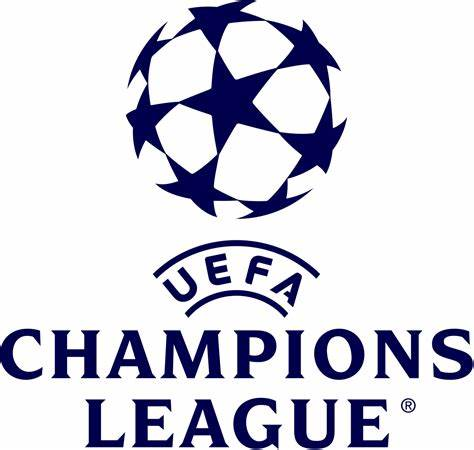
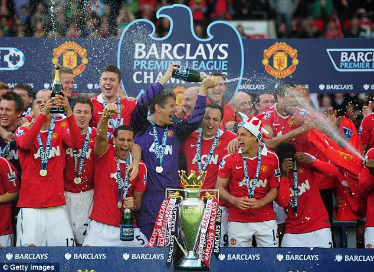
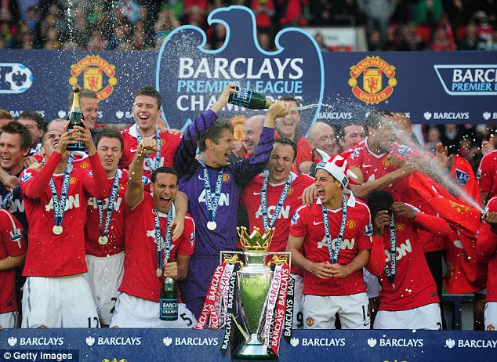

Overview
Purpose
I am going to bring you the best information about the Champions League. From the stats, to the history, and the best facts. I will update it to show the winners for the 2023 season!
Audience
This site is for sports fans, but most importantly, soccer fans!
Branding
Website Logo
Style Guide
Color Palette
Palette URL: https://coolors.co/013ae4-f7f7f7-4dffff-0e2050-a214ee| Primary | Secondary | Accent 1 | Accent 2 |
|---|---|---|---|
| [#0E2050] | [#0030BF] | [#F7F7F7] | [#A214EE] |
Typography
Heading Font: Bebas Neue
Paragraph Font: Titillium Web
Normal paragraph example
Welcome to my website dedicated to the UEFA Champions League, the premier club competition in European football. As a fan of the sport, I have always been fascinated by the rich history, unforgettable moments, and outstanding statistics that have come to define this competition. With this website, I aim to provide the best and most comprehensive coverage of the UEFA Champions League, covering everything from its origins to its current state and beyond. Why will people come to my site? The UEFA Champions League is one of the most popular and widely-followed sporting events in the world, with millions of fans tuning in each year to watch the best clubs compete for the ultimate prize. Fans of the sport will come to my site to learn more about the competition's history, memorable moments, and statistics. They will also come to my site to stay up to date with the latest news and analysis surrounding the competition, including match previews and reviews, player and team profiles, and more. What questions will visitors expect my site to answer for them? Visitors to my site will expect to find answers to a wide range of questions related to the UEFA Champions League, including: What is the history of the competition? Who are the most successful clubs and players in the competition's history? What are some of the most memorable moments in the competition's history? How has the competition evolved over time? Who are the top contenders for this year's competition? What are the key matchups to watch in each round of the competition? Who are the top players to watch in each team? How can I stay up to date with the latest news and analysis about the competition?
Colored paragraph example
What types of activities will visitors want to complete on my site? Visitors to my site will want to engage in a variety of activities related to the UEFA Champions League, including: Reading in-depth articles about the competition's history, memorable moments, and statistics. Staying up to date with the latest news and analysis surrounding the competition. Watching highlights and full match replays from past games. Participating in discussions and debates with other fans of the competition. Testing their knowledge with quizzes and trivia games related to the competition. What information is necessary to complete any actions my site offers? In order to engage in the activities offered on my site, visitors will need access to a variety of information related to the UEFA Champions League, including: Detailed information about the history and evolution of the competition. Up-to-date news and analysis surrounding the competition. High-quality videos and highlights from past games. Accurate statistics and data about the competition and its participants. Interactive quizzes and trivia games that test their knowledge of the competition. Why will visitors come to my site instead of another to get this information or complete the actions? Visitors will come to my site instead of others because of the quality and depth of the content that I offer. Unlike other sites that provide only basic information about the competition, my site will provide in-depth coverage of every aspect of the competition, from its history to its current state and beyond. Visitors will also appreciate the interactive features and engaging content that my site offers, such as quizzes, trivia games, and discussions with other fans of the competition. In conclusion, my website is dedicated to providing the best and most comprehensive coverage of the UEFA Champions League, covering everything from its origins to its current state and beyond. Fans of the sport will come to my site to learn more about the competition's history, memorable moments, and statistics, as well as to stay up to date with the latest news and analysis surrounding the competition. With interactive features, engaging content, and a commitment to quality and depth, my site is the ultimate destination for fans of the UEFA Champions League.
Navigation


Site Map
Content
Home Page
The UEFA Champions League is an annual football club competition organized by the Union of European Football Associations (UEFA). It is one of the most prestigious tournaments in the world, featuring the best teams from various European leagues competing for the coveted title of European champions.
UEFA Champions League Trophy | Manchester United
 

Champions League History
This tournament has been held since 1955, with the first winners being Real Madrid. Not only are they the first winners ever, but they are also the club with the most trophies under their belt with 14. Their most recent win came last year in 2022. Aside from being the club with the most trophies, they are also responsible for having the player with the most trophies. Paco Gento holds the record for most trophies (6), while Real Madrid legend, Cristiano Ronaldo, sits at 2nd place with 5 at the moment.
1955 Real Madrid | Paco Gento


Champions League Stats and Facts
Throughout the many years this tournament has been held, there has been players and teams that have come and gone, with some being remembered as legends. Cristiano Ronaldo holds the record for the most goals scored with 141 goals, while longtime rival, Lionel Messi, is at 2nd place with 125 goals. As far as games played, there is one man that dominates this category as well, which is Cristiano Ronaldo. Ronaldo has played 178 matches, meanwhile his old teammate, Iker Casillas, sits at 2nd place with 177 matches played and he is also the record-holder for most clean sheets with 57.
Cristiano Ronaldo | Iker Casillas


Wireframes
Create three wireframes for your site. One for each page and list them here